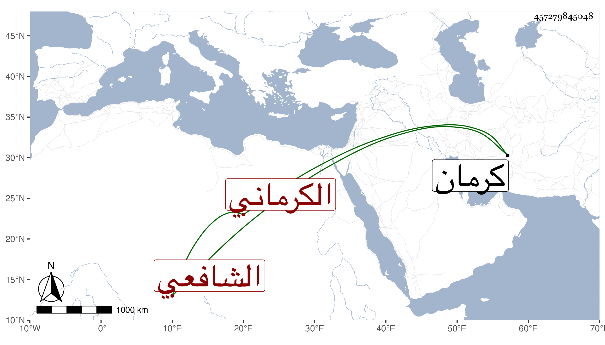

0902Sakhawi.DawLamic.ITO20230111-ara1.EIS1600.457279845048
Biography ID: 457279845048
106
علي بن محمود الضياء الكرماني الشافعي . أخذ عن أبي الفتوح الطاووسي والمعين نصر الله بن الظهير أبي النجاشي عبد الرحمن والمجد اللغوي وجماعة ، وشرح المشارق في أربع مجلدات وسماه ضوء المشارق ، وولي قضاء الشافعية بكرمان ولقيه الطاووسي في سنة ثلاثين وثمانمائة فاستمد منه فوائد وأجاز له بل أذن له في الإفتاء وكان حينئذ قد زاد على التسعين ووصفه بالمولى المحدث الأعظم الأعلم الرباني المفتي المصنف .
